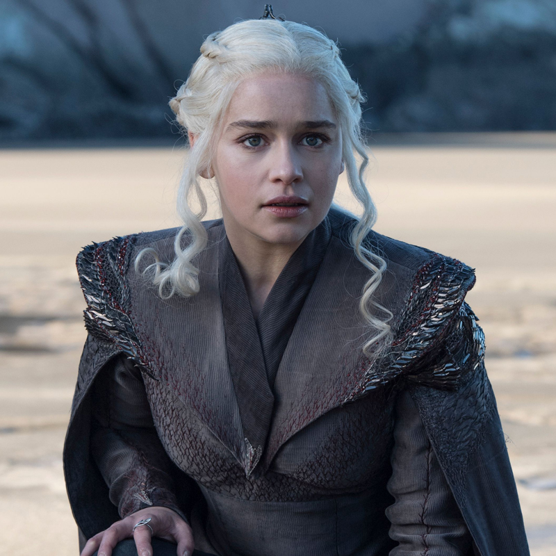
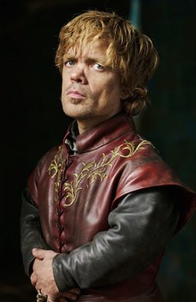

A continuación se presentan algunos de los personajes más importantes de Game of Thrones:
Jon Snow
Jon Snow es uno de los personajes principales de la serie. Es conocido por su sentido del honor y su valentía.
"El bastardo de Invernalia"

Daenerys Targaryen
Daenerys es la última sobreviviente de la dinastía Targaryen y busca recuperar el trono que le fue arrebatado a su familia.
"La Madre de Dragones"
Tyrion Lannister
Tyrion es un personaje astuto e inteligente, a menudo subestimado por su familia debido a su estatura.
"El Gnomo"
